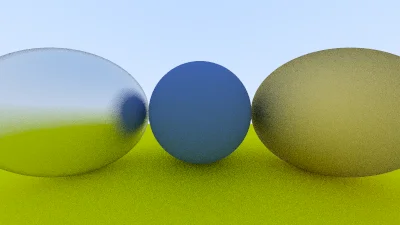

R-7 : Metal Reflection (Lots of Bounces)
Introducing the Material abstraction and implementing specular reflection for metal surfaces, including a fuzz parameter for brushed / rough metal.
Part 7: Metal Reflection
Material Abstraction
We need a system that lets each object carry its own material, and lets each material decide how a ray scatters. The pattern mirrors our Hittable abstraction.
First, add a forward declaration for Material to Hittable.h and store a pointer to it in HitInfo :
Hittable.h
#pragma once
#include "Ray.h"
#include <memory>
class Material; // forward declaration
class HitInfo
{
public:
Position coordinates;
Vector3 normal;
std::shared_ptr<Material> material;
double time;
bool frontFace;
void SetFaceNormal(const Ray& rRay, const Vector3& outwardNormal)
{
frontFace = Dot(rRay.GetDirection(), outwardNormal) < 0;
normal = frontFace ? outwardNormal : -outwardNormal;
}
};The abstract Material base class :
Material.h
#pragma once
#include "Color.h"
#include "Hittable.h"
class Material
{
public:
virtual ~Material() = default;
virtual bool Scatter(
const Ray& rRayIn, const HitInfo& rHitInfo,
Color& attenuation, Ray& rScattered
) const = 0;
};Lambertian Material
The diffuse material from the previous post, now as a proper class. It absorbs some light (attenuation) and scatters the rest in a random direction :
Material.h
class Lambertian : public Material
{
private:
Color mAlbedo; // base reflectance color
public:
Lambertian(const Color& albedo) : mAlbedo(albedo){}
bool Scatter(
const Ray& rRayIn, const HitInfo& rHitInfo,
Color& attenuation, Ray& rScattered
) const override
{
Vector3 scatterDirection = rHitInfo.normal + RandomUnitVector();
// Catch degenerate scatter direction (avoid near-zero vectors)
if (scatterDirection.NearZero()) scatterDirection = rHitInfo.normal;
rScattered = Ray(rHitInfo.coordinates, scatterDirection);
attenuation = mAlbedo;
return true;
}
};Add the NearZero helper to Vector3.h :
Vector3.h
// Returns true if the vector is near zero in all dimensions
bool NearZero() const
{
const double s = 1e-8;
return (fabs(x) < s) && (fabs(y) < s) && (fabs(z) < s);
}Metal Material
Metal reflects rays using the formula: reflected = v − 2(v · n)n; the mirrored direction about the surface normal.
Add the Reflect helper to Vector3.h :
Vector3.h
inline Vector3 Reflect(const Vector3& v, const Vector3& n)
{
return v - 2 * Dot(v, n) * n;
}The fuzz parameter offsets the reflected direction by a random amount, simulating brushed or rough metal, 0 is a perfect mirror, 1 is very rough :
Material.h
class Metal : public Material
{
private:
Color mAlbedo;
double mFuzz; // 0 = perfect mirror, 1 = very rough
public:
Metal(const Color& albedo, double fuzz)
: mAlbedo(albedo), mFuzz(fuzz < 1 ? fuzz : 1){}
bool Scatter(
const Ray& rRayIn, const HitInfo& rHitInfo,
Color& attenuation, Ray& rScattered
) const override
{
Vector3 reflected = Reflect(rRayIn.GetDirection(), rHitInfo.normal);
reflected = Unit(reflected) + (mFuzz * RandomUnitVector());
rScattered = Ray(rHitInfo.coordinates, reflected);
attenuation = mAlbedo;
// Only scatter if the reflected ray is on the correct side of the surface
return (Dot(rScattered.GetDirection(), rHitInfo.normal) > 0);
}
};Wiring It All Together
Update Sphere.h to store a material :
Sphere.h
#pragma once
#include "Hittable.h"
#include "Material.h"
class Sphere : public Hittable
{
private:
Position mCenter;
double mRadius;
std::shared_ptr<Material> mMaterial;
public:
Sphere(Position center, double radius, std::shared_ptr<Material> material)
: mCenter(center), mRadius(radius), mMaterial(material){}
bool Hit(const Ray& rRay, Interval rayTime, HitInfo& hitInfo) const override;
};Assign the material in Sphere::Hit :
Sphere.cpp
hitInfo.time = root;
hitInfo.coordinates = rRay.At(root);
Vector3 outwardNormal = (hitInfo.coordinates - mCenter) / mRadius;
hitInfo.SetFaceNormal(rRay, outwardNormal);
hitInfo.material = mMaterial; // pass the material to the hit record
return true;Update Camera::RayColor to call Scatter :
Camera.cpp
Color Camera::RayColor(const Ray& rRay, int depth, const Hittable& rWorld) const
{
if (depth <= 0) return Color(0, 0, 0);
HitInfo hitInfo;
if (rWorld.Hit(rRay, Interval(0.001, infinity), hitInfo))
{
Ray scattered;
Color attenuation;
if (hitInfo.material->Scatter(rRay, hitInfo, attenuation, scattered))
return attenuation * RayColor(scattered, depth - 1, rWorld);
return Color(0, 0, 0);
}
Vector3 unitDirection = Unit(rRay.GetDirection());
double blue = 0.5 * (unitDirection.y + 1.0);
return (1.0 - blue) * Color(1.0, 1.0, 1.0) + blue * Color(0.5, 0.7, 1.0);
}Set up the scene in main with a mix of Lambertian and Metal spheres :
Raytracing.cpp
int main()
{
// Materials
auto matGround = make_shared<Lambertian>(Color(0.8, 0.8, 0.0));
auto matCenter = make_shared<Lambertian>(Color(0.1, 0.2, 0.5));
auto matLeft = make_shared<Metal>(Color(0.8, 0.8, 0.8), 0.3);
auto matRight = make_shared<Metal>(Color(0.8, 0.6, 0.2), 1.0);
// World
HittableCollection world;
world.Add(make_shared<Sphere>(Position( 0.0, -100.5, -1.0), 100.0, matGround));
world.Add(make_shared<Sphere>(Position( 0.0, 0.0, -1.2), 0.5, matCenter));
world.Add(make_shared<Sphere>(Position(-1.0, 0.0, -1.0), 0.5, matLeft));
world.Add(make_shared<Sphere>(Position( 1.0, 0.0, -1.0), 0.5, matRight));
// Render
Camera camera(400, 16.0/9.0, 100, 50);
camera.Render(world);
return 0;
}Render it and check out those beautiful reflections! Next up: glass.